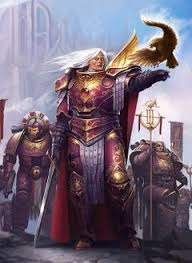

Fulgrim
Fulgrim é o Primarca da III Legião, os Emperor's Children. o "Fênix", senhor da III Legião, os Emperor's Children. A trajetória de Fulgrim é talvez a mais trágica de todas, representando a queda da busca pela perfeição absoluta para a depravação total.
Quem é Fulgrim?
Fulgrim caiu no mundo de Chemos, um planeta minerador desolado, mergulhado em uma noite eterna e com recursos escassos. Diferente de seus irmãos que foram guerreiros, Fulgrim começou como um operário. Através de pura eficiência e intelecto, ele salvou o planeta da extinção econômica e social, tornando-se seu governante. Quando o Imperador o encontrou, a Legião de Fulgrim estava quase extinta devido a uma praga genética. Ele jurou que seus poucos guerreiros seriam o exemplo máximo da humanidade, ganhando o direito exclusivo de ostentar a Águia Palatina (o símbolo do Imperador) em suas armaduras.
Características e Personalidade
A Busca pela Perfeição: Para Fulgrim, "bom" nunca era o suficiente. Tudo — da pintura de um quadro à execução de uma manobra militar — deveria ser perfeito. Essa obsessão acabou se tornando sua maior vulnerabilidade.
Arrogância e Narcisismo: Sua crença na própria superioridade o tornava isolado de alguns irmãos. Ele via a guerra como uma forma de arte e seus soldados como pincéis.
Insegurança Oculta: Por trás da fachada de semideus perfeito, Fulgrim temia profundamente falhar com o Imperador ou ser visto como "menos" que seus irmãos.
Ligação com Ferrus Manus: Ele possuía uma amizade profunda e lendária com Ferrus Manus (Primarca dos Iron Hands). Eles eram "irmãos de forja", e a traição dessa amizade é um dos pontos centrais da Heresia de Horus.
Grandes Feitos
A Restauração da III Legião: Com apenas 200 guerreiros restantes quando foi encontrado, Fulgrim reconstruiu os Emperor's Children do zero, transformando-os em uma das forças de combate mais disciplinadas e eficazes da Grande Cruzada.
A Corrupção pela Lâmina de Laer: Durante a conquista do mundo alienígena de Laeran, Fulgrim encontrou uma espada exótica em um templo. Sem saber, a arma continha um Demônio de Slaanesh. A entidade começou a sussurrar em sua mente, alimentando seu orgulho e distorcendo sua busca por perfeição em uma busca por prazeres sensoriais e excessos.
Isstvan V: Fulgrim foi o primeiro a tentar converter um irmão para a causa de Horus (tentando persuadir Ferrus Manus). Quando Ferrus recusou, a amizade se tornou ódio. No massacre de Isstvan V, os dois duelaram. Fulgrim, impulsionado pelo poder demoníaco da espada, decapitou Ferrus Manus. O horror de ter matado seu melhor amigo quebrou o que restava da mente de Fulgrim, permitindo que o demônio possuísse seu corpo completamente por um tempo.
Ascensão Demoníaca: Eventualmente, Fulgrim retomou o controle (ou fundiu-se ao demônio) e ascendeu à condição de Príncipe Demônio de Slaanesh. Ele abandonou sua forma humana por uma forma serpentina, com quatro braços e uma beleza terrível e alienígena.
Atualmente: Diferente de Guilliman ou do Lion, Fulgrim não está interessado em governar. Ele passou milênios no "Mundo do Prazer" dentro do Olho do Terror, entregue a excessos inimagináveis. Porém recentemente ele reapareceu na galáxia ocasionalmente, liderando hordas de sua legião corrompida. Ele permanece como uma tentação constante e um lembrete vivo de que até a alma mais nobre pode apodrecer se for consumida pelo orgulho.
Estilo de Combate
- Combate elegante e preciso
- Velocidade e técnica impecável